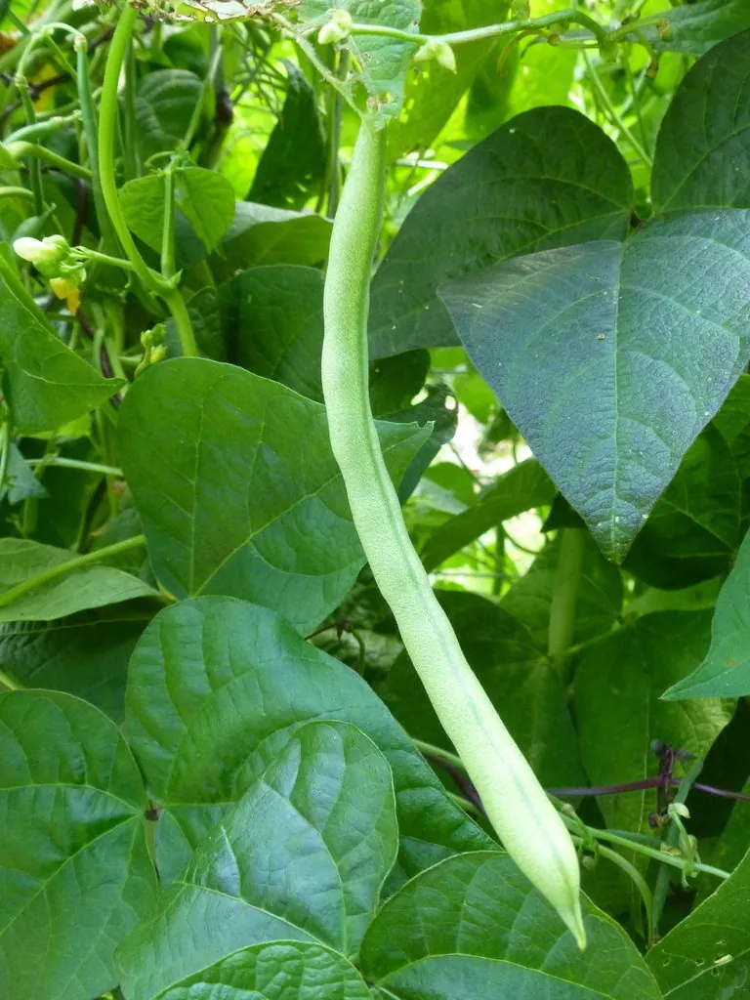

农作物与经济植物 · 植物界
菜豆 Phaseolus vulgaris

豆科一年生草本，蔓生或矮生，荚果细长、嫩荚与干豆均可食，原产美洲，是世界最重要的食用豆类之一。
- 分类
- 门被子植物门纲木兰纲目豆目科豆科属菜豆属
- 栖息环境
- 温暖向阳的农田、菜园，适宜疏松排水良好的壤土
- 地理分布
- 原产中美洲与南美安第斯山区，现世界温带至热带广泛栽培，中国各地均有种植
- 保护级别
- 暂无评估；栽培作物，品种资源丰富
物种志
菜豆为豆科菜豆属一年生草本，分蔓生与矮生两类，蔓生种需搭架，茎可长达 3 米。叶为三出复叶，小叶卵形，被短柔毛。总状花序腋生，花白色、淡紫或红色，蝶形花冠，自花授粉为主。荚果线形，长 10–20 厘米，嫩荚绿色或紫色，成熟后开裂；种子肾形，有白、红、黑、花斑等色，花期 6–8 月。
菜豆原产中美洲与南美洲安第斯山区，是美洲印第安人最早驯化的作物之一，15 世纪后传入欧洲并扩散至全球。嫩荚即“四季豆”“豆角”，可炒食、腌渍；干豆即芸豆，可煮粥、做豆沙。栽培喜温暖、阳光充足，适宜疏松排水良好的土壤，忌连作；蔓生种需及时搭架引蔓。需注意嫩荚含皂苷与植物血凝素，必须充分加热熟透后食用。
形态与习性
- 原产地中美洲与南美安第斯山区
- 株型蔓生种茎长可达 3 米，矮生种 40–60 厘米
- 生育期一年生，播后 50–70 天可采嫩荚
- 用途嫩荚炒食腌渍，干豆煮粥做豆沙
- 栽培喜温向阳，忌连作，蔓生种需搭架
- 注意嫩荚含皂苷与血凝素，须熟透食用
趣味知识
- 菜豆的嫩荚就是“四季豆”，干种子则叫“芸豆”，同一种植物两种吃法。
- 生四季豆含皂苷和植物血凝素，未熟透食用会引起恶心呕吐，务必炒熟煮透。
- 它与玉米、南瓜一起构成美洲原住民的“三姐妹”种植体系，豆类为玉米固氮。
- 菜豆种子颜色极为多样，白、红、黑、斑纹俱全，是遗传学研究的经典材料。